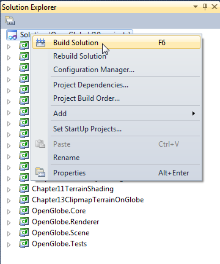
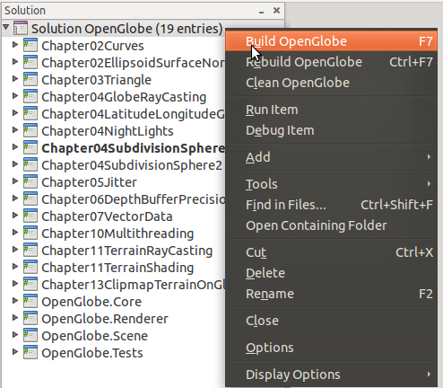

OpenGlobe, the example code for our book written in C# and OpenGL 3.3, is available
as a zip file here with simple build instructions:
Windows Build Instructions
Tested on Windows XP, Vista, and 7
- Download and unzip the code (30.8 MB).
- Upgrade your video card drivers [NVIDIA | ATI]. OpenGL 3.3 is required.
- If necessary, install Visual Studio 2010 or later. The free express edition is sufficient.
- Open
<unzip path>\Source\OpenGlobe.sln in Visual Studio.
-
Right click the solution in the
Solution Explorer and click Build Solution.

- To run an example, right click on the project in the
Solution Explorer, and click Set as Startup Project, then hit F5.
Linux Build Instructions
Tested on Ubuntu 10.04 (Mono 2.4.4), 10.10 (Mono 2.6.7), and 11.04 (Mono 2.6.7)
- Download and unzip the code (30.8 MB).
- Upgrade your video card drivers [NVIDIA | ATI]. OpenGL 3.3 is required.
- Ubuntu 11.04 Only:
sudo apt-get install libx11-dev
- If necessary, install MonoDevelop 2.4 or later:
sudo apt-get install monodevelop
- Open
<unzip path>/Source/OpenGlobe.sln in MonoDevelop.
-
Right click the solution, and click
Build OpenGlobe.

- To run an example, right click on the project and click
Run Item.
Also check out OpenGlobe on sourceforge.
|